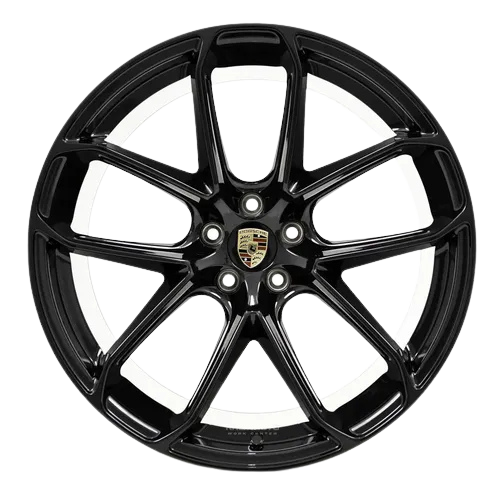
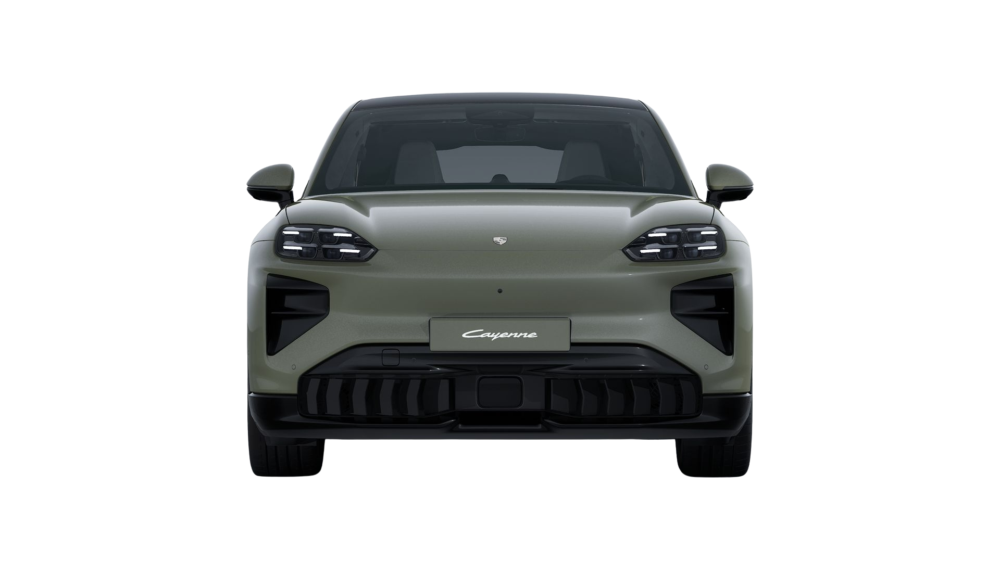
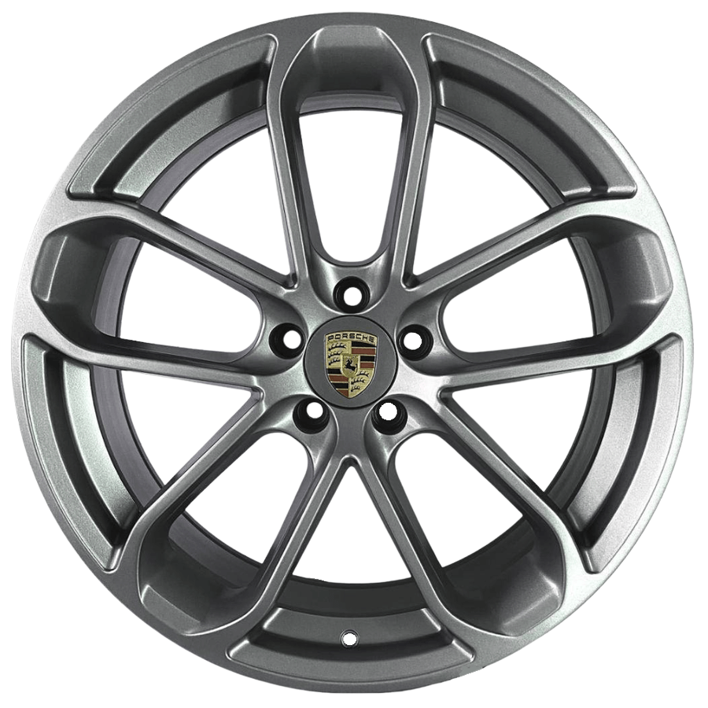

Roda
Conjunto de rodas de liga
leve com design derivado
do motorsport



Aceleração
de 0 a 100km/h
velocidade máxima
0CV
Conjunto de rodas de liga
leve com design derivado
do motorsport

Conjunto de rodas de liga
leve com design de cinco
raios de braço duplo
Toque nos cartões para descobrir

Foi o primeiro SUV da Porsche.
Possuía recursos como reduzida e bloqueio do diferencial central em determinadas configurações.

O 958 marcou uma evolução importante na eletrificação da linha Cayenne.
recebeu sistemas eletrônicos mais avançados e maior eficiência

Painel totalmente digital e assistentes eletrônicos de condução
Aerodinâmica ativa, com elementos que se ajustam sozinhos conforme a velocidade
 01
01
A Porsche utilizou Cayennes preparados para disputar o Rally Transsyberia, uma competição de longa distância que atravessava terrenos extremamente difíceis entre a Europa e a Ásia.
 02
02
A Porsche criou uma versão especial baseada no Cayenne S para o rali. O carro recebeu preparação específica para competição, incluindo equipamentos de proteção, suspensão modificada e componentes voltados ao uso fora de estrada.